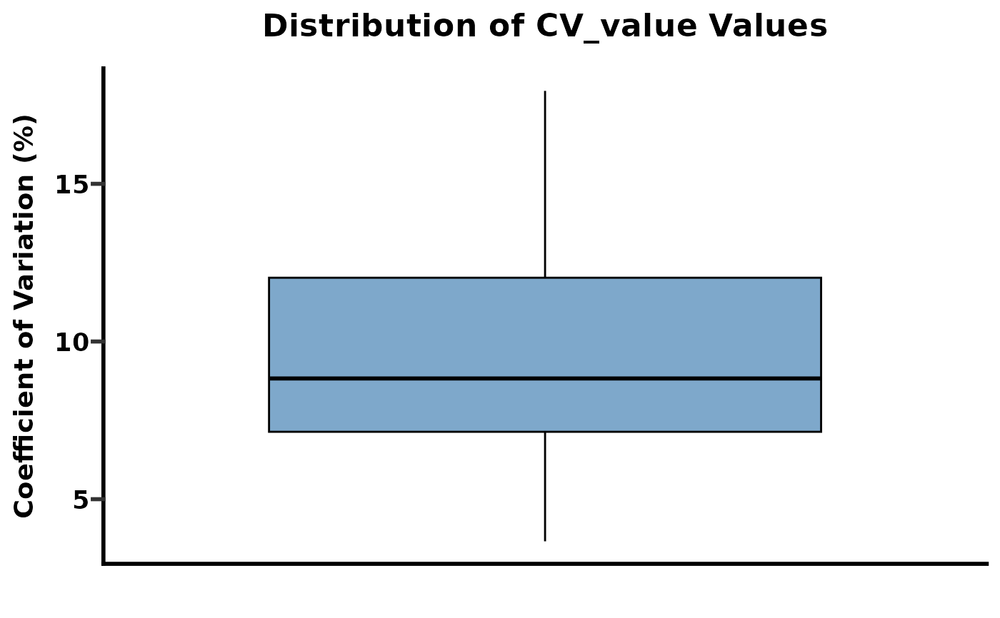
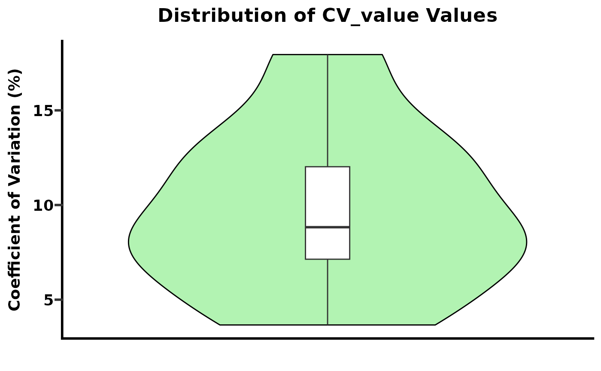
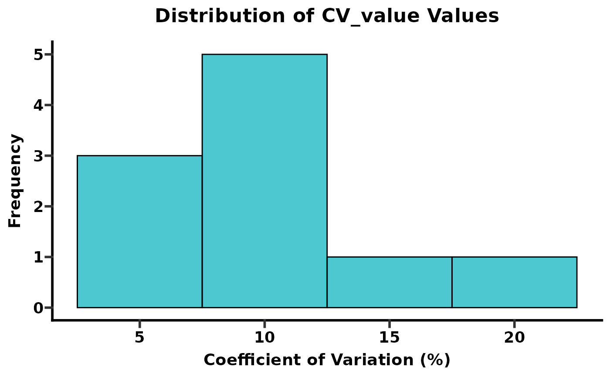
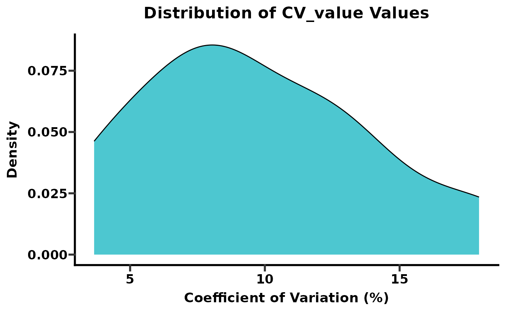

This function calculates the Coefficient of Variation (CV) for each row (e.g., each protein or phosphosite) in a numerical data frame. It can optionally generate a box plot, violin plot, histogram or density plot of the calculated CVs. The CV is calculated as (standard deviation / mean) * 100.
Usage
get_cv(
data,
name = "cv",
plot = c("no", "box_plot", "violin_plot", "histogram", "density_plot")
)Arguments
- data
A data frame containing numerical values for which CV should be calculated row-wise. Missing values (`NA`) are handled by removing them from the calculation of mean and standard deviation for each row.
- name
A character string specifying the name of the new column that will store the calculated Coefficient of Variation values. Default is "cv".
- plot
A character string indicating whether to generate a plot and which type.
"no": No plot is generated; only the data frame with the added CV column is returned.
"box_plot": Generates a box plot of the calculated CV values.
"violin_plot": Generates a violin plot of the calculated CV values.
"histogram": Generates a histogram of the calculated CV values.
"density_plot": Generates a density plot of the calculated CV values.
Value
#' If `plot = "no"`, returns the original `data` data frame with an additional column (named as specified by `name`) containing the row-wise Coefficient of Variation. If `plot = "box_plot"` or `plot = "violin_plot"`or `plot = "histogram"` or `plot = "violin_plot"` returns a `list` containing:
`data`: The original `data` data frame with the added CV column.
`plot`: A `ggplot` object of the generated box plot, violin plot, histogram or density plot.
Details
The function calculates the CV for each row independently. It's particularly useful for quality control in omics data, where CV can indicate technical variability across replicates for a given feature.
**Missing Values (`NA`)**: `NA` values in a row are ignored when calculating the mean and standard deviation for that row's CV. If a row contains only `NA` values, its CV will be `NaN` (Not a Number).
**Plotting**: For plotting, all calculated CV values are aggregated into a single distribution. The plots do not categorize CV by groups unless further manipulation is done outside this function. The x-axis for plots is set to "All Samples" to reflect this global distribution.
Examples
set.seed(123)
sample_data <- data.frame(
Feature = paste0("F", 1:10),
Replicate1 = rnorm(10, mean = 100, sd = 10),
Replicate2 = rnorm(10, mean = 105, sd = 12),
Replicate3 = rnorm(10, mean = 95, sd = 8),
Replicate4 = c(rnorm(9, mean = 100, sd = 10), NA) # Add an NA for demonstration
)
# Case 1: Calculate CV and return data only
cv_results_df <- get_cv(data = sample_data[, -1], # Exclude 'Feature' column for CV calculation
name = "CV_percent",
plot = "no")
print(head(cv_results_df))
#> # A tibble: 6 × 5
#> Replicate1 Replicate2 Replicate3 Replicate4 CV_percent
#> <dbl> <dbl> <dbl> <dbl> <dbl>
#> 1 94.4 120. 86.5 104. 14.1
#> 2 97.7 109. 93.3 97.0 6.99
#> 3 116. 110. 86.8 109. 12.0
#> 4 101. 106. 89.2 109. 8.62
#> 5 101. 98.3 90.0 108. 7.59
#> 6 117. 126. 81.5 107. 17.9
# Case 2: Calculate CV and generate a box plot
cv_results_boxplot <- get_cv(data = sample_data[, -1],
name = "CV_value",
plot = "box_plot")
print(head(cv_results_boxplot$data))
#> # A tibble: 6 × 5
#> Replicate1 Replicate2 Replicate3 Replicate4 CV_value
#> <dbl> <dbl> <dbl> <dbl> <dbl>
#> 1 94.4 120. 86.5 104. 14.1
#> 2 97.7 109. 93.3 97.0 6.99
#> 3 116. 110. 86.8 109. 12.0
#> 4 101. 106. 89.2 109. 8.62
#> 5 101. 98.3 90.0 108. 7.59
#> 6 117. 126. 81.5 107. 17.9
cv_results_boxplot$plot # Display the box plot

# Case 3: Calculate CV and generate a violin plot
cv_results_violinplot <- get_cv(data = sample_data[, -1],
name = "CV_value",
plot = "violin_plot")
print(head(cv_results_violinplot$data))
#> # A tibble: 6 × 5
#> Replicate1 Replicate2 Replicate3 Replicate4 CV_value
#> <dbl> <dbl> <dbl> <dbl> <dbl>
#> 1 94.4 120. 86.5 104. 14.1
#> 2 97.7 109. 93.3 97.0 6.99
#> 3 116. 110. 86.8 109. 12.0
#> 4 101. 106. 89.2 109. 8.62
#> 5 101. 98.3 90.0 108. 7.59
#> 6 117. 126. 81.5 107. 17.9
cv_results_violinplot$plot # Display the violin plot

# Case 4: Calculate CV and generate a histogram
cv_results_histogram <- get_cv(data = sample_data[, -1],
name = "CV_value",
plot = "histogram")
print(head(cv_results_histogram$data))
#> # A tibble: 6 × 5
#> Replicate1 Replicate2 Replicate3 Replicate4 CV_value
#> <dbl> <dbl> <dbl> <dbl> <dbl>
#> 1 94.4 120. 86.5 104. 14.1
#> 2 97.7 109. 93.3 97.0 6.99
#> 3 116. 110. 86.8 109. 12.0
#> 4 101. 106. 89.2 109. 8.62
#> 5 101. 98.3 90.0 108. 7.59
#> 6 117. 126. 81.5 107. 17.9
cv_results_histogram$plot # Display the histogram

# Case 5: Calculate CV and generate a density_plot
cv_results_density_plot <- get_cv(data = sample_data[, -1],
name = "CV_value",
plot = "density_plot")
print(head(cv_results_density_plot$data))
#> # A tibble: 6 × 5
#> Replicate1 Replicate2 Replicate3 Replicate4 CV_value
#> <dbl> <dbl> <dbl> <dbl> <dbl>
#> 1 94.4 120. 86.5 104. 14.1
#> 2 97.7 109. 93.3 97.0 6.99
#> 3 116. 110. 86.8 109. 12.0
#> 4 101. 106. 89.2 109. 8.62
#> 5 101. 98.3 90.0 108. 7.59
#> 6 117. 126. 81.5 107. 17.9
cv_results_density_plot$plot # Display the density plot

# Example with NA-only row
na_data <- data.frame(A = c(1, NA, 3), B = c(2, NA, 4))
na_cv <- get_cv(na_data, plot = "no")
print(na_cv)
#> # A tibble: 3 × 3
#> A B cv
#> <dbl> <dbl> <dbl>
#> 1 1 2 47.1
#> 2 NA NA NA
#> 3 3 4 20.2